Poder inalámbrico
Sin cables, ni extensores
Modelo DCM501
Cafetera a batería, diseñada para resistir las jornadas
más exigentes, en cualquier entorno.
Sin cables, ni extensores
Soporta todos los golpes
Sin filtros de papel
Construcción compacta y optimizada para el profesional exigente
Se abre fácilmente, protegiendo
el compartimento del agua.
Máxima versatilidad, compatible
con baterías de 12V y 18V.
Plegable, con alto poder trasladar
la cafetera con facilidad.
Inoxidable, diseñada para encajar
en la máquina evitando derrames.
Descubrí su ingeniería interna
Ubicado en el compartimiento superior, tiene capacidad
de hasta 240 ml y marcas de medición.
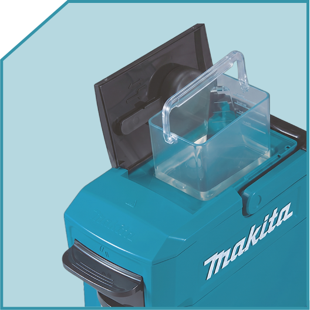
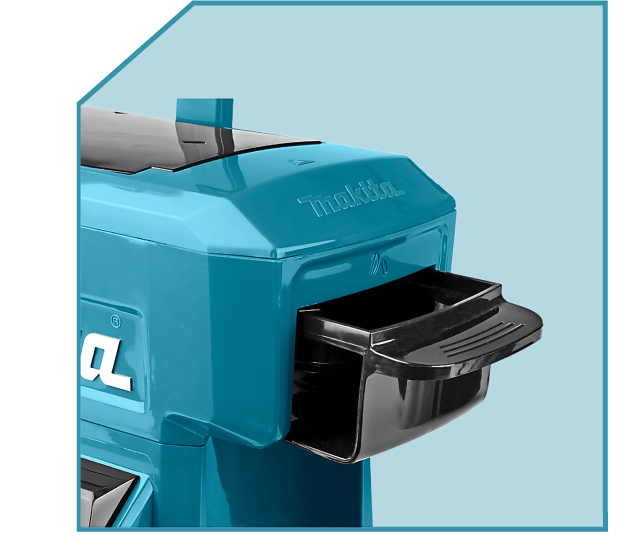
Apto para la doble compatibilidad, permite utilizar tanto el
café en cápsulas como el café molido tradicional.
Las claves para activar el mecanismo y disfrutar de tu café
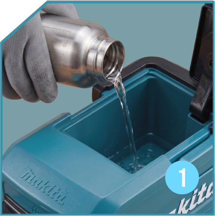
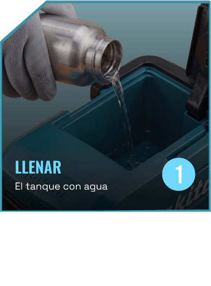
El tanque con agua
1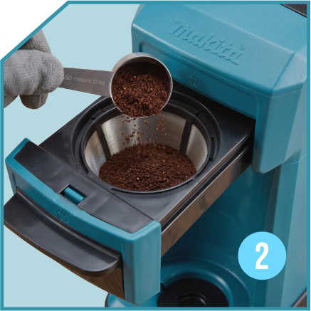
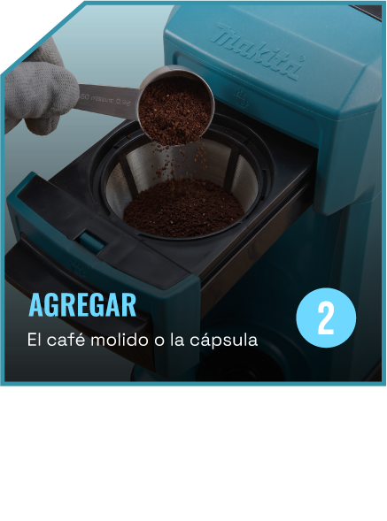
El café molido o la cápsula
2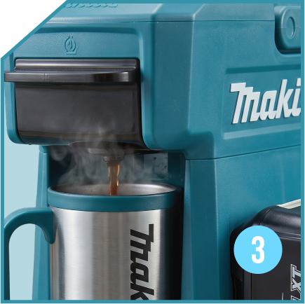
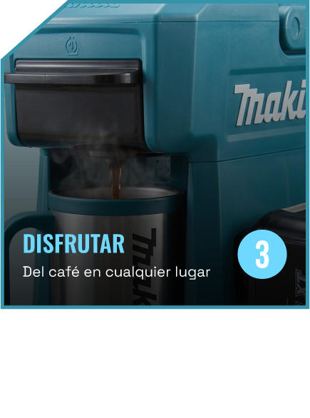
Del café en cualquier lugar
3Te acompaña en cada lugar
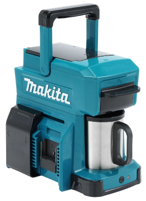
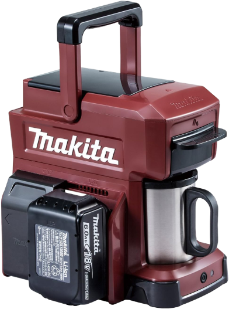
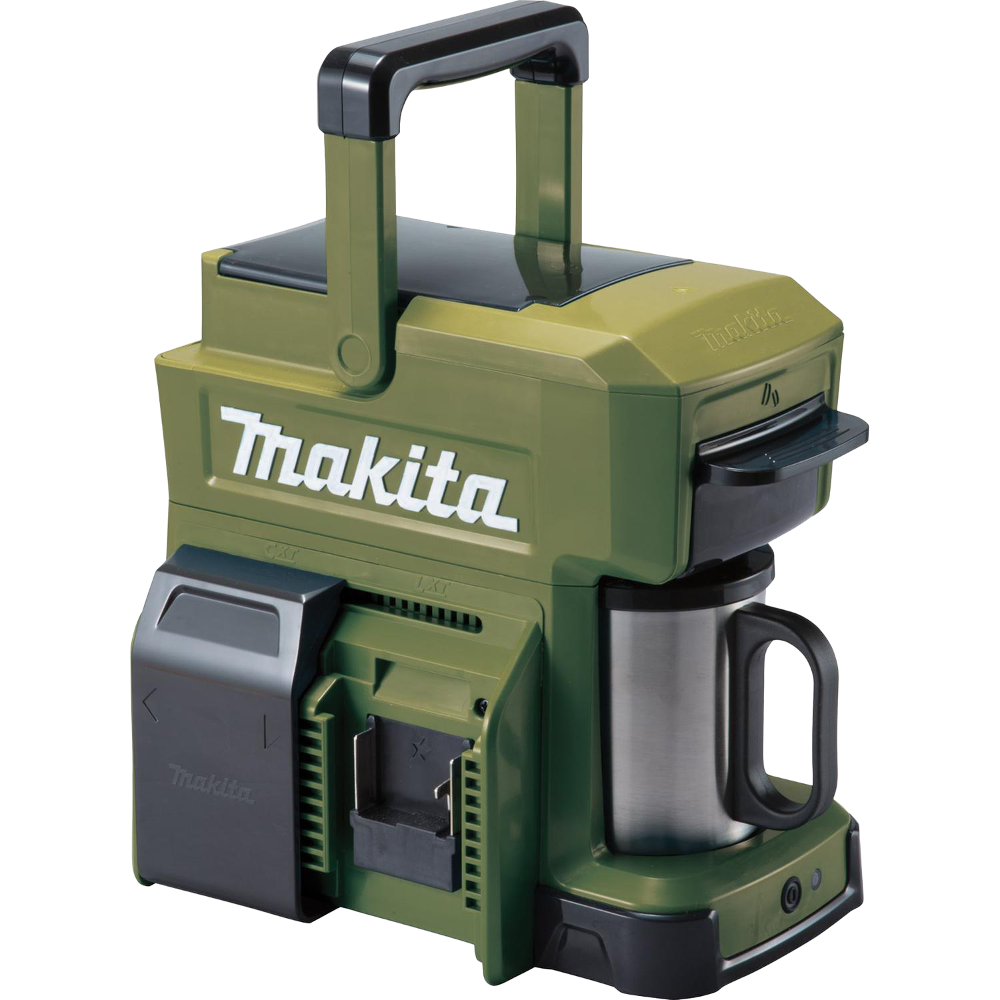
Rojo óxido